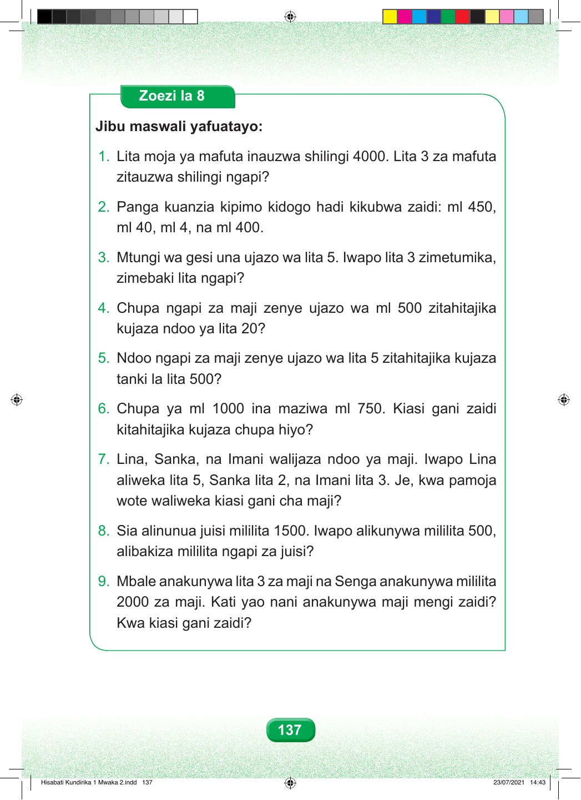

Zoezi la Nane. Jibu maswali yafuatayo. Swali namba moja. Lita moja ya mafuta inauzwa shilingi elfu nne. Lita tatu za mafuta zitauzwa shilingi ngapi? Swali namba mbili. Panga kuanzia kipimo kidogo hadi kikubwa zaidi: mililita mia nne hamsini, mililita arobaini, mililita nne, na mililita mia nne. ml 40, ml 4, na ml 400. Swali namba tatu. Mtungi wa gesi una ujazo wa lita tano. Iwapo lita tatu zimetumika, zimebaki lita ngapi? zimebaki lita ngapi? Swali namba nne. Chupa ngapi za maji zenye ujazo wa mililita mia tano zitahitajika kujaza ndoo ya lita ishirini? kujaza ndoo ya lita 20? Swali namba tano. Ndoo ngapi za maji zenye ujazo wa lita tano zitahitajika kujaza tanki la lita mia tano? tanki la lita 500? Swali namba sita. Chupa ya mililita elfu moja ina maziwa mililita mia saba hamsini. Kiasi gani zaidi kitahitajika kujaza chupa hiyo? Swali namba saba. Lina, Sanka na Imani walijaza ndoo ya maji. Lina aliweka lita tano, Sanka lita mbili, na Imani lita tatu. Je, kwa pamoja wote waliweka kiasi gani cha maji? Swali namba nane. Sia alinunua juisi mililita elfu moja mia tano. Iwapo alikunywa mililita mia tano, alibakiza mililita ngapi za juisi? Swali namba tisa. Mbale anakunywa lita tatu za maji na Senga anakunywa mililita elfu mbili za maji. Kati yao nani anakunywa maji mengi zaidi? Kwa kiasi gani zaidi? Kwa kiasi gani zaidi? 137 Hisabati Kundirika 1 Mwaka 2.indd 137 23/07/2021 14:43